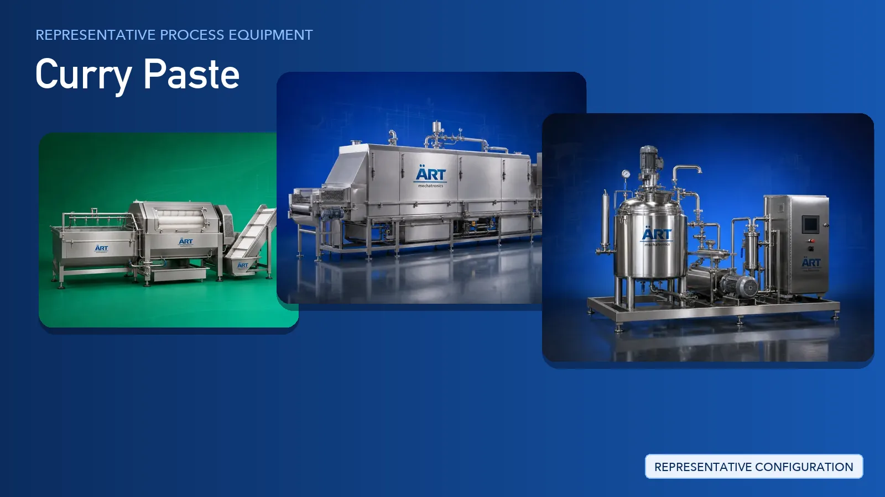

Curry Paste Plant & Machinery Solutions (Wet Masala & Spice Paste Processing)
Curry paste is a wet, ready-to-cook product made from chillies, garlic, ginger, onion, herbs, oil and spices, supplied in retail jars and pouches as well as in bulk packs for hotels, restaurants and food manufacturers.

About Curry Paste processing
ART Mechatronics provides complete turnkey solutions for curry paste manufacturing plants, offering systems for washing, peeling, wet milling, cooking, blending, cooling, filling and packing. Our solutions are designed for hygienic wet processing, consistent batch quality and reliable automated operation for domestic and export markets.
Complete Curry Paste Process Flow
Chillies, garlic, ginger, onion, herbs and other raw inputs are received and washed to remove soil, dust and surface contaminants.
Ensures hygiene before processing begins.
Washed material is peeled, de-stemmed and sorted, then cut down to a uniform feed for milling.
Removes unwanted material and prepares consistent feed.
Prepared material is milled with water or oil into a smooth paste base.
Produces:
- Smooth, consistent paste texture
- Uniform breakdown of fibrous material
- Ready-to-cook base
The paste base is cooked with oil, ground spices, salt and other ingredients under controlled agitation.
Ensures:
- Controlled cooking of the batch
- Even distribution of spices and oil
- Repeatable flavour profile
The cooked batch is refined into a stable, uniform consistency.
Helps prevent separation and gives consistent mouthfeel.
Finished paste is cooled and held in hygienic tanks ahead of filling.
Paste is filled into jars, bottles, pouches or bulk containers, then sealed, coded, inspected and packed.
Suitable for retail jars, pouches and bulk HoReCa packs.
Machinery Required for Curry Paste Plant
Turnkey Curry Paste Plant Solutions
ART Mechatronics offers complete turnkey solutions for curry paste manufacturing plants, including:
- Process design & plant layout
- Washing and preparation lines
- Wet grinding and milling systems
- Cooking, jacketed vessel and agitation systems
- Cooling and holding systems
- Automation & control panels
- Filling and packaging line integration
- Installation & commissioning
- After-sales support
We customize solutions based on:
- Paste type (curry, masala, ginger garlic, herb)
- Batch or continuous operation
- Production capacity
- Cooking requirements
- Packaging format (jar, bottle, pouch, bulk)
Why Choose ART Mechatronics for Curry Paste
- Expertise in wet food processing systems
- Integrated washing, milling and cooking lines
- Hygienic food-grade machinery design
- Consistent paste texture and batch quality
- Automated, repeatable batch operation
- Global export capability
Where it's used
Get pricing & specs for the Curry Paste plant
Share the product, target capacity, current process and plant location. These details help our engineers discuss the right machine or line configuration.
One partner, from design to start-up
ART Mechatronics designs, manufactures, installs and commissions your Curry Paste plant solution with regional presence in India, UAE and Thailand.